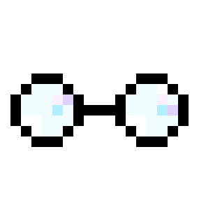
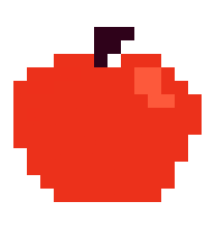

Show Me The Money!

Sorting Things Out

Meta-confused about Metacognition
Cooking Up Knowledge

What is Data Vis?
Communicating Science Research
Perspective

Learning about Learning
Trustworthiness in Qualitative Research

Data Portraits
Visualizing Uncertainty
On Writing Abstracts
What is HCI?
Why get a PhD?
Semiotics
Make a Mark
Semantic Based Economic Mapping

gotdairyya